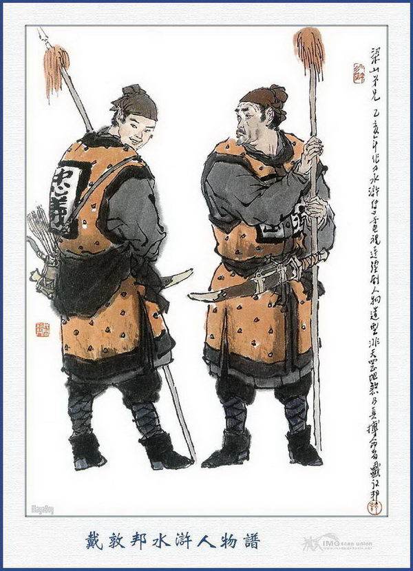
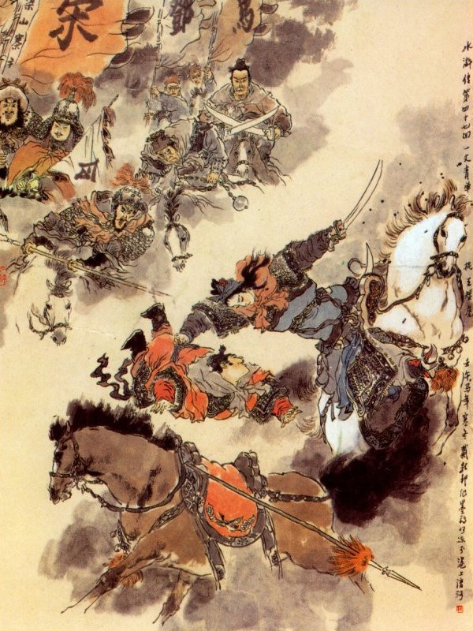
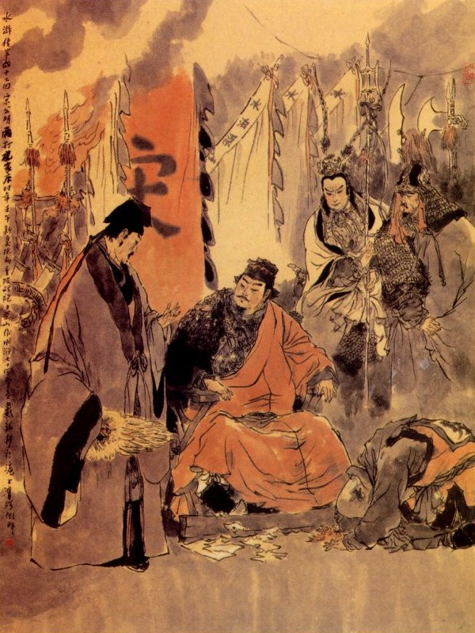

Bấy giờ Tống Giang kinh sợ bàng hoàng, trông xa bốn phía toàn thị quân phục đông như kiến cỏ, chàng liền thúc quân mã cứ theo cái lớn đánh thục vào để đi. Chợt thấy ba quân đứng chừng cả lại rồi ai nấy kêu gọi ầm ầm không dứt miệng.
Tống Giang cả kinh, hỏi vì cớ sao? Chúng đều đáp rằng:
- Phía trước toàn thị đường cong lối khuất, chạy mãi quanh co rồi tới chỗ lúc nãy đây.
Tống Giang lại truyền lệnh quân sĩ cứ theo ánh lửa sáng, trông phía nào có nhà cửa thì chạy về phía ấy. Quân sĩ chạy được một lát rồi lại thấy bọn tiền quân kêu lên rằng:
- Đường đi toàn là chông gai sừng hươi cả, không sao mà bước đi được.
Tống Giang nghe vậy than rằng:
- Chẳng hay Trời giết Tống Giang cho xong.
Đương khi tiến thoái kinh hoàng thì bỗng thấy tả quân của Mục Hoằng náo động rồi thấy bảo rằng:
- Có Thạch Tú đi đến đó.
Tống Giang vừa quay ra nom đã thấy Thạch Tú váv thanh đao, chạy đến trước ngựa bẩm rằng:
- Ca Ca cứ yên tâm, tiểu đệ đã dò được đường rồi, bây giờ phải truyền lệnh cho tam quân, bất cứ đường rộng hay đường hẹp cứ lối nào có cây dương liễu trắng thì cứ dò đường ấy mà đi.
Tống Giang bèn lập tức truyền cho quân mã, cứ theo lối cây dương trắng để đi. Đi được năm sáu dặm đường, thấy quân giặc phía trước càng ngày càng đông thêm mãi. Tống Giang lấy làm nghi ngại, gọi Thạch Tú mà hỏi rằng:
- Làm sao quân giặc phía trước đông mãi thế?
Thạch Tú nói:
- Họ có đèn đỏ làm hiệu, nên mới kéo đông ra thế?
Hoa Vinh ngồi trên mình ngựa trỏ bảo Tống Giang rằng:
- Trong đám cây có ánh đèn đỏ đây kia, hễ ta đi phía nào là họ quay đèn về phía đó, chắc là đèn hiệu đó hẳn?
Tống Giang hỏi:
- Làm cách nào mà trừ được ngọn đèn ấy đi?
Hoa Vinh đáp:
- Có khó gì?
Nói đoạn liền giơ cung đặt tên phóng ngựa dấn lên, nhằm giữa ánh đèn bắn một phát, đĩa đèn rơi xuống đất.
Bấy giờ bọn quân phục bên kia không thấy hiệu đèn, đều nhao nhao loạn cả lên, Tống Giang bèn truyền cho Thạch Tú dẫn đường, để kéo quân ra lối cửa thôn. Chợt lại thấy ở trước mặt có tiếng kêu ầm ĩ rồi có một dẫy đom đóm đuốc sáng trưng, Tống Giang lại truyền lệnh tiền quân đóng lại rồi cho Thạch Tú đi khám xét căn do.
Được một lát, Thạch Tú về báo toán quân mã thứ hai của sơn trại kéo đến, đương đánh phá bọn phục binh của địch ở đó.
Tống Giang nghe báo thúc giục quân tiến lên giáp đánh, bọn quân mã của trang khách đều bị thua mà chạy toán loạn cả. Đoạn rồi Tống Giang hội họp cả mấy toán quân của Tần Minh, Lâm Xung mà kéo ra đóng ở trước thôn.
Sáng hôm sau, kéo quân lên đóng trại ở một khu gò cao rồi kiểm điểm lại quân mã thì thấy thiếu mất Trấn Tam Sơn Hoàng Tín, Tống Giang cả kinh, hỏi thăm căn do thì có tên quân sĩ bẩm rằng:
- Đêm qua Hoàng Đầu Lĩnh vâng tướng lệnh đi khám đường, bất ý đến chỗ khóm lau, bỗng bị giây móc giật ngã xuống ngựa rồi có năm bảy người đổ ra bắt ngay, không sao cứu được.
Tống Giang nghe nói cả giận, toan hạ lệnh chém mấy tên đi theo Hoàng Tín và không biết đem tin về báo ngay khi đó. Sau có Hoa Vinh, Lâm Xung khuyên giải mới tha.
Bấy giờ Tống Giang cùng mọi người thấy không phá nổi Chúc Gia Trang mà lại thiệt mất mấy người anh em vào đó thì ai nấy đều có ý buồn rầu mà cùng chia nhau bàn kế để thi hành.
Dương Hùng nói:
- Ở đây có ba thôn liên lạc với nhau, duy có Lý Đại Quân Nhân ở bên đông, bữa trước bị Chúc Bưu bắn một mũi tên vào cánh tay, hiện nay vẫn còn dưỡng bệnh trong trag. Vậy Ca Ca thử qua đó bàn kế với ông ta xem sao?
Tống Giang nói:
- Té ra ta quên mất ông lão ấy. Phải, địa thế ở đây, tất là ông ta thuộc lắm, cần phải hỏi đến ai?
Nói đoạn lập tức sai sắm sửa lễ vật, chọn đóng một con ngựa rất tốt và giao cho Lâm Xung, Tần Minh giữ trại rồi đem Hoa Vinh, Dương Hùng, Thạch Tú lên ngựa, dẫn ba trăm nhân mã đi thẳng đến Lý Gia Trang.

QUÂN LƯƠNG SƠN BẠC
Khi tới nơi, thấy cửa trang đóng kín, đích kiều cất lên, trong đám trang bầy nhân mã rất đông rồi trên vòm gác khua trống ấm ỹ cả lên. Tống Giang ngồi trên mình ngựa kêu lên rằng:
- Tôi là nghĩa sĩ ở Lương Sơn Bạc đến chào Đại Quân Nhân đây, không có việc chi mà phải phòng bị.
Bấy giờ Đỗ Hưng đứng trong cửa trang nom ra thấy Dương Hùng, Thạch Tú ở đó, bèn mở cổng trang, thả chiếc thuyền con đi ra để chào Tống Giang, Tống Giang xuống ngựa đáp lễ lại.
Dương Hùng, Thạch Tú đến gần Tống Giang bẩm rằng:
- Ông này tức là chủ quản, người dẫn anh em chúng tôi đến Lý Gia Trang Quan Nhân hôm nọ, tên là Quỷ Kiểm Nhĩ Đỗ Hưng đó.
Tống Giang nói:
- Vậy ngài là Đỗ Hưng chủ quản đây, xin phiền ngài vào nói với Lý Đại Quan Nhân rằng: Chúng tôi là Tống Giang ở Lương Sơn Bạc, nghe tiếng Đại Quan Nhân đã lâu mà không được hầu bao giờ? Nay nhân Chúc Gia Trang, sinh sự, nên tôi phải đi qua đây, gọi là có chút lễ vật và con ngựa tốt, muốn đem vào bái yết Quan Nhân, thực không có ý gì khác.
Đỗ Hưng vâng lời xuống thuyền vào trang báo cho Lý Ứng biết, Bấy giờ Lý Ứng đương bị thương, khoác chăn nằm ở trong sảnh, nghe nói liền bảo với Đỗ Hưng rằng:
- Ta còn đau lắm không thể trở dậy tiếp kiến được, xin để lần sau. Còn các lễ vật ta không dám nhận gì hết cả.
Đỗ Hưng vâng lời, trở ra nói với Tống Giang rằng:
- Đông Nhân tôi rất lấy làm phàn nàn đáng tiếc, cho tôi ra bái tạ Đầu Lĩnh, đáng lẽ cũng ra đây để đón tiếp ngài, song ngặt vì còn bị thương nặng không sao dậy được song để lần sau mời ngài quá bộ đến chơi, thực là may lắm; Còn các quý vật ngài cho, Đông Nhân chúng tôi không dám nhận.
Tống Giang nói:
- Thôi tôi biết ý Đông Nhân của chủ quán rồi. Tôi vì đánh phá Chúc gia Trang bất lợi, muốn đến chào hỏi song Đại Quan Nhân lại sợ Chúc Gia ngờ vực nên không dám tiếp đó thôi.
Đỗ Hưng nói:
- Không phải thế, thực là đương đau chưa dậy được. Tôi tuy người đất Trung Sơn, song đến đây cũng đã lâu cũng hơi biết được chút ít sự tình, xin thưa để ngài rõ: Nguyên vùng đây khoảng giữa là Chúc Gia Trang, ba thôn cùng kết nguyện tử sinh, để cùng nhau tiếp ứng. Nhưng ngày nay Chúc Gia Trang đã sinh sự bất bình với chủ nhân tôi đây, nên thôn tôi không chịu đi cứu ứng, duy còn Hổ Gia Trang là đồng tâm hiệp lực mà thôi, Hổ Gia có một nữ tướng là Nhất Trượng Thanh Hổ Tam Nương, khiến đôi khẩu Nhật Nguyệt Đao rất tài giỏi mà sắp gả cho con thứ ba họ Chúc nay mai. Vậy Tướng Quân có đánh Chúc Gia Trang thì mặt bên đông không phải đề phòng mà phải dự bị mặt tây cho cẩn thận. Trên trang Chúc Gia có hai tòa cửa, một tòa ở trước núi Độc Long và một tòa ở sau núi, nếu đánh độc cửa trước là không ăn thua, phải đánh hai mặt mới có thể phá được. Mặt trước đường lối quanh co khó hiểu, rộng hẹp không đều, hễ chỗ nào có cây dương trắng mà rẽ đi đấy là đường sống, còn toàn là đường chêt cả.
Thạch Tú hỏi:
- Nếu bây giờ họ chặt hết cả dương trắng đi thì nhận làm sao cho biết đường?
Đỗ Hưng đáp:
- Cho dẫu họ chặt hết cây, tất nhiên chưa đào hết gốc, như thế cũng có thể nhận ra. Nhưng phải tiến binh ban ngày, chứ ban đêm thì không có lợi.
Tống Giang nghe nói bái tạ Đỗ Hưng rồi lại dẫn một hàng nhân mã trở về trước trại. Khi về tới trại, Tống Giang bèn nói chuyện Lý Ứng không chịu tiếp và những lời nói của Đỗ Hưng, thuật lại cho bọn Lâm Xung cùng các Đầu Lĩnh nghe.
Lý Quỳ vội kêu lên rằng:
- Lão quái! Ca Ca có bụng tốt đưa lễ vật đến, sao hắn lại không ra tiếp đón? Để tôi dẫn vài trăm người đến đánh phá cái thôn ranh con ấy mà bắt hắn phải ra bái kiến Ca Ca mới được.
Tống Giang nói:
- Hiền đệ không biết, người ta là một lương dân giàu có, sợ khiếp đám quan trường, khi nào dám tiếp chúng ta ngay được?
Lý Quỳ nói rằng:
- Thằng cha ấy có lẽ là đứa trẻ con, sợ không dám ra tiếp kiến ta thì phải.
Chúng nghe nói, đều cười phá cả lên.
Tống Giang lại nói:
- Tuy nhiên, nay còn hai người bọn ta bị hãm trong ấy, không biết tính mệnh thế nào, vậy anh em hết sức theo ta mà vào đánh phá một phen nữa xem sao?
Chúng nghe nói đều đứng dậy mà rằng:
- Ca Ca đã ra tướng lệnh ai dám không theo, song chẳng hay Ca Ca cắt ai đi trước?
Hắc Toàn Phong Lý Quỳ nói luôn rằng:
- Anh em sợ lũ trẻ con, để tôi đi trước cho.
Tống Giang nói:
- Ngươi làm tiên phong không có lợi, lần này ta không cho đi nữa.
Lý Quỳ nghe nói, cúi gầm mặt xuống, tức giận mà không dám nói ra, Tống Giang bèn cắt Mã Lân, Đặng Phi, Âu Bằng, Vương Nụy Hổ, theo Tống Giang làm tiên phong. Thứ nhì đến Đới Tung, Tần Minh, Dương Hùng, Thạch Tú, Lý Tuấn, Trương Hoành, Trương Thuận, Bạch Thắng, sắp sửa để đánh đường thủy. Thứ ba đến Lâm Xung, Hoa Vinh, Mục Hoằng, Lý Quỳ, chia làm hai đường để tiếp ứng. Khi phân phát đã xong, các quân sĩ đều cơm nước no nê rồi lên ngựa sắp hàng tiến vào để đánh.
Tống Giang đi đội quân tiên phong, trước mặt dàn một lá cờ Súy đỏ rất to, dẫn bốn Đầu Lĩnh, một trăm năm mươi quân kỵ và hơn nghìn quân bộ thẳng tới Chúc Gia Trang. Khi đi tới trước núi Độc Long, Tống Giang dừng ngựa đứng nom, thấy trên thôn Chúc Gia Trang phất phơ cắm ngọn cờ trắng, viết mười bốn chữ rất to:
"Lấp bằng Thủy Bạc bắt Tiều Cái"
Phá phẳng Lương Sơn tróc Tống Giang"
Tống Giang nom thấy vậy, cả giận mà rằng:
- Nếu ta không phá nổi Chúc Gia Trang, quyết không trở về Lương Sơn Bạc làm gì nữa.
Các Đầu Lĩnh thấy vậy cũng đều tức giận đùng đùng không ai chịu được. Bấy giờ Tống Giang thấy mấy toán quân mã đi sau, đã lục tục kéo đến bèn để đội quân thứ hai đánh cửa trước rồi dẫn một đội quân thứ nhất ra đánh cửa sau.
Khi tới phía núi Độc Long, thấy thôn Chúc Gia, toàn thị thành đồng vách sắt, nghiêm chỉnh vững vàng, khó lòng mà hạ ngay được. Đương khi ngắm thì thấy phía tây có một tóan quân mã reo hò đánh sát đến. Tống Giang lại để Mã Lân, Đặng Phi đanh cửa sau Chúc Gia Trang rồi tự đem Âu Bằng, Vương Nụy Hổ chia lấy một nửa quân ra đón đánh quân phía bên tây. Bấy giờ trong đám phi sơn ấy nhô ra hai ba mươi quân kỵ trong đó có một viên Nữ Tướng tức Nhất Trượng Hồ Tam Nương, ở Hổ Gia Trang ra đó. Hổ Tam Nương cưỡi ngựa bờm xanh, múa hai khẩu Nhật Nguyệt Đao, dẫn năm trăm trang khách, ra cứu ứng Chúc Gia Trang.
Tống Giang thấy vậy liền nói:
- Hổ Gia Trang có viên Nữ Tướng rất giỏi, có lẽ người này, ai dám ra nghinh địch với hắn?
Vương Nụy Hổ vốn là đồ hiếu sắc, nghe nói đến viên Nữ Tướng thì mong sao bắt được ngay mới thoả, liền quát lên một tiếng rồi vỗ ngựa múa thương xông ra để đánh. Bên kia Nhất Trượng Thanh cũng xốc ngựa múa đao ra đấu với Vương Nụy Hổ, đôi bên quân sĩ reo hò cả lên.
Hai bên đánh nhau được mười lăm hiệp thì Tống Giang thấy Vương Nụy Hổ đã hơi luống cuống, chỉ quanh co che đỡ mà không đánh được hiệp nào nữa. Nguyên Vương Nụy Hổ mới thấy Nhất Trượng Thanh đã tưởng là dễ bắt được ngay, ai ngờ đâu được hơn mươi hiệp thì chân tay đã mỏi mệt điên đảo mà Nhất Trượng Thanh thì tinh thần vẫn vững chãi không hề khiếp loạn chút nào. Bấy giờ Nhất Trượng Thanh thấy vậy, liền múa đao hăng hái xông vào. Vương Nụy Hổ không sao địch nổi, đành phải quay ngựa toan chạy về bản trận. Bị Nhất Trượng Thanh thừa thế tay phải xách hẳn ra ngoài mình ngựa rồi bọn tranh khách túm đến mà bắt ở trận tiền. Âu Bằng đứng ngoài thấy vậy, vội múa đao xông vào để đánh Nhất Trượng Thanh. Nhất Trượng Thanh lại múa đao xông ngựa đến đánh Âu Bằng. Nguyên Âu Bằng là một tay lính võ xuất thần, khiến một cây thiết trang rất giỏi. Tống Giang ngồi trên mình ngựa vẫn đắc chí khen thầm, song cũng không sao mà đánh đổ Nhất Trượng Thanh cho được.

Đặng Phi ở đằng kia đã thấy Nhất Trượng Thanh bắt Vương Nụy Hổ mà Âu Bằng cũng đánh không lại, liền xốc ngựa múa cây thiết liên mà mũa xông ra để đánh. Bấy giờ bọn Chúc Gia Trang trông thấy, lo khi Nhất Trượng Thanh bị thua, liền bỏ đích kiều xuống, mở tung cửa trang ra rồi Chúc Long dẫn hơn ba trăm người, múa gươm xốc ngựa thẳng ra đánh bắt Tống Giang. Mã Lân thấy vậy, vội vàng xốc ngựa múa song đao để ra đón đánh Chúc Long. Đặng Phi sợ Tống Giang đứng đó hoặc bị quân giặc tràn đến, bèn bồi hồi quanh quẩn gần đó mà không hề dám lánh ra xa.
Khi đó Tống Giang thấy Mã Lân đánh Chúc Long không thắng. Âu Bằng đánh Nhất Trượng Thanh không được, trong bụng đương băn khoăn lo sợ thì chợt thấy một toán quân mã ở đâu kéo đến.
Tống Giang trông xa thì chính là Tích Lịch Hoả Tần Minh đem quân ra cứu ứng, bèn lấy làm mừng rõ gọi to lên rằng:
- Tần Thống Chế đến giúp cho Mã Lân với.
Tần Minh vốn là người tính cấp, vả lại đương căm người họ Chúc bắt mất đồ đệ là Hoàng Tín, liền vỗ ngựa múa Lang Nha Côn thẳng xông vào đánh Chúc Long, còn Mã Lân lại dẫn người sang toan cướp Vương Nụy Hổ về. Nhất Trượng Thanh thấy vậy, bèn bỏ Âu Bằng mà sang đánh với Mã Lân. Đôi bên đều ngồi trên mình ngựa múa đánh song đao, vù vù như gió thổi, loàng nhoàng như tuyết sa làm cho Tống Giang thấy phải hoa mắt lên mà thấy không kịp. Bên kia Tần Minh đánh nhau với Chúc Long được mươi hiệp, Chúc Long không sao mà địch nổi, liền có giáo sư là Loan Đình Ngọc giắt thiết chùy, cầm gươm lên ngựa xông ra. Âu Bằng thấy vậy, bèn quay ngựa đánh nhau với Loan Đình Ngọc.
Loan Đình Ngọc không hề đánh lại, chỉ cắp thương dấn ngựa mà chạy lánh về một bên. Âu Bằng cố ra sức đuổi, bị Loan Đình Ngọc phi trúng một chùy ngã ngay xuống ngựa.
Đặng Phi thấy vậy kêu lên:
- Quân đâu, cứu người!
Nói đoạn múa thiết liên xông đến chỗ Loan Đình Ngọc, còn Tống Giang thì thét lâu la để cứu Âu Bằng lên ngựa.
Bấy giờ Chúc Long không sao chống được với Tần Minh, bèn vỗ ngựa tháo chạy rồi Loan Đình Ngọc phải bỏ Đặng Phi mà đánh với Tần Minh. Hai tướng đánh nhau mười hiệp bất phân thắng phụ rồi Loan Đình Ngọc lừa miếng phá đĩnh cắp gươm chạy thẳng. Tần Minh múa côn xông đuổi, Loan Đình Ngọc theo lối cỏ hoang mà chạy vào đó. Tần Minh không biết là kế cũng cứ hồng hộc đuổi theo vào.
Nguyên ở Chúc Gia Trang, các chỗ như vậy, đều có quân phục sẵn cả. Khi chúng thấy Tần Minh xốc ngựa vào, liền giật dây tròng ngựa, ngã dật xuống đất rồi đổ xô ra bắt sống Tần Minh. Đặng Phi thấy Tần Minh ngã ngựa, liền thúc ngựa sấn vào để cứu. Khi chàng trông thấy chúng kéo thừng lên, bèn toan quay ngựa chạy ra thì bỗng đã ngã lăn ra đó rồi chúng túm vào mà băt nốt.
Tống Giang thấy vậy càng thêm lo sợ, cố cứu cho Âu Bằng lên ngựa rồi Mã Lân cũng bỏ Nhất Trượng Thanh mà quay lại kèm đỡ Tống Giang để chạy về bên Nam.
Bấy giờ Loan Đình Ngọc, Chúc Long, Nhất Trượng Thanh, đều đổ xô đuổi đến đằng sau. Tống Giang luống cuống, cơ hồ hết đường để chạy. Chợt đâu thấy chính mặt phía Nam có một hảo hán cưỡi ngựa dẫn bốn năm trăm người chạy đến, nom ra thì chính là Mộc Gia Lạn Mục Hoằng. Về phía Đông Nam lại có một toán ba trăm người, với hai hảo hán chạy đến thì một người là Bệnh Quan Sách Dương Hùng và một người là Tiểu Mạnh Tam Lang Thạch Tú.
Phía Đông Bắc lại có một hảo hán kêu rằng:
- Để người lại đó.
Tống Giang nom ra thì chính là Tiểu Lý Quảng Hoa Vinh.
Bấy giờ ba đường nhân mã đều tề tựu cả đến. Tống Giang lấy làm cả mừng, lại cùng nhau hết sức mà quay lại đánh Loan Đình Ngọc và Chúc Long.
Trong Chúc Gia Trang thấy vậy, để một mình Chúc Hổ coi giữ cửa trang, còn Chúc Bưu cũng cưỡi ngựa cầm thương, dẫn năm trăm nhân mã kéo ra để hiệp lực với Chúc Long, đánh nhau rất là kịch liệt.
Khi đó Lý Tuấn, Trương Hoành, Trương Thuận, đã xông xuống nước, xong bị trên trang bắn lên dữ dội, không sao mà hạ thủ được còn Đới Tung, Bạch Thắng chỉ đứng trên bờ reo hò ầm ĩ cả lên.
Được một lát Tống Giang thất trời đã xế tối, liền gọi Mã Lân kèm đỡ Âu Bằng đi trước ra cửa thôn rồi thúc bọn tiểu lâu la khua mõ thanh la và dóng dả các vị hảo hán vừa đánh vừa chạy trở ra.
Tống Giang lại sợ các vị hảo hán đi quanh quẩn lầm đường, bèn thúc ngựa đi trước để dò xem đường lối.
Đương khi đi tìm kiếm quanh co thì thấy Nhất Trượng Thanh cưỡi ngựa xông đến, Tống Giang sợ luống cuống không kịp trở tay, vội ngoắt ngựa về phía Đông để chạy.
Nhất Trượng Thanh cũng thúc ngựa đuổi theo sát lưng vào đến chỗ sâu thẳm trong trang rồi, vừa toan hạ thủ để bắt Tống Giang. Vừa khi đó, có một người ở bên sườn núi quát to lên rằng:
- Con ranh kia, đuổi Ca Ca ta đi đâu đó?
Tống Giang nghe nói trông ra đã thấy Lý Quỳ múa song phủ dẫn bảy tám mươi tên tiểu lâu la sồng sộc đi đến, Nhất Trượng Thanh thấy vậy, bèn kìm cương ngựa lại rồi quay ngoắt vào đám rừng cây để chạy. Tống Giang cũng kìm ngựa lại sem thì lại thấy bên đám rừng cây có một toán mười mấy quân kỵ đi ra và có một vị tráng sĩ tức là Báo Tử Đầu Lâm Xung đi trước, Lâm Xung ngồi trên mình ngựa quát to lên rằng:
- Chị chàng kia, chạy đi đâu thế?
LÂM XUNG
Nhất Trượng Thanh nghe hỏi liền phi đao phóng ngựa đến đánh Lâm Xung, Lâm Xung đưa bát sà mâu ra đón. Đôi bên đánh nhau chưa được mươi hợp, Lâm Xung lừa miếng phá đĩnh, để cho Nhất Trượng Thanh chém hai khẩu đao vào, cầm sà mâu gạt một cái, bắn hai khẩu đao về một bên rồi đè sấn vào cắp ngang lưng Nhất Trượng Thanh mà xách ra ngoài mình ngựa.
Tống Giang thấy vậy, vỗ tay lấy làm đắc chí, Lâm Xung gọi quân sĩ trói lấy Nhất Trượng Thanh rồi quay ngựa đến trước mặt Tống Giang mà hỏi rằng:
- Hắn chưa hề thương phạm đến Ca Ca chứ?
Tống Giang đáp:
- Chưa hề chi cả.
Nói đoạn liền sai Lý Quỳ đi vào trong thôn tiếp ứng các vị hảo hán, để cùng ra cửa thôn rồi sẽ thương nghị. Hắc Toàn Phong vâng lệnh, dẫn quân bản bộ quay đi rồi Lâm Xung cắp Nhất Trượng Thanh trên mình ngựa mà đưa Tống Giang ra ngoài cửa thôn. Chiều hôm đó các vị Đầu Lĩnh thấy trời gần tối mà thế quân không có tiện lợi, liền kéo quân ra ngoài cửa thôn để nghỉ. Bọn Chúc Gia Trang cũng thu quân mã để về trong trang.
Bấy giờ các người trong thôn cùng Chúc Long liền đem mấy hảo hán mới bị bắt, nhốt vào xe tù, đợi khi bắt được Tống Giang, sẽ giải quan một thể. Hổ Gia Trang cũng sai người đem Vương Nụy Hổ giải sang Chúc Gia Trang, để nhốt cả vào xe tù ở đó.
Bên này Tống Giang thu hết đại đội nhân mã ra đóng trại ở ngoài cửa thôn. Trước hết cho đem Nhất Trượng Thanh lên, bắt hai mươi tên tiểu lâu la lão thành, cùng bốn người Đầu mục, cưỡi bốn con ngựa rồi trói chặt hai tay Nhất Trượng Thanh, cho cưỡi lên một con ngựa, lập tức giải về sơn trại giao cho phụ thân là Tống Thái Công thu giữ, để đợi khi về sẽ xử. Các vị Đầu Lĩnh thấy vậy đều có bụng ngờ, chắc là Tống Giang muốn chiếm Nhất Trượng Thanh nên mới kỹ càng cẩn thận như thế?
Tống Giang lại tuyển lấy một cỗ xe đưa Âu Bằng về sơn trại để yên nghỉ. Các quân chúng được lện đều trở về sơn trại ngay đêm hôm đó.
Sáng hôm sau có người báo:
- Có quân sư Ngô Dụng đem ba anh em họ Nguyễn cùng Lã Phương, Quách Thịnh, dẫn năm trăm nhân mã tới nới.

Tống Giang nghe báo, vội ra trại đón tiếp quân sư vào trướng trung quân để cùng ngồi bàn chuyện. Ngô Học Cứu sai đem rượu thịt đến cất chén mừng Tống Giang, và nhất diện khao thưởng các tướng cùng tam quân.
Ngô Dụng nói với Tống Giang:
- Tiều Đầu Lĩnh ở trên sơn trại, nghe nói Ca Ca ra đánh lần thứ nhất không được lợi, nên sai Ngô Dụng tôi đem năm vị Đầu Lĩnh, đến đây để giúp chẳng hay mấy bữa nay sự thể ra sao?
Tống Giang có vẻ lo buồn mà rằng:
- Quân Chúc Gia Trang thực là vô lễ. Trên trang có cắm lá cờ trắng, viết mười bốn chữ: "Lấp bằng Thủy Bạc bắt Tiều Cái; Phá phẳng Lương Sơn tróc Tống Giang". Như thế thì phỏng tha làm sao được? Tôi tiến binh lần thứ nhất vì địa lý không tinh, bị mất Dương Lâm, Hoàng Tín, đến hôm qua ra trận, lại bị Nhất Trượng Thanh bắt mất Vương Nụy Hổ, Loan Đình Ngọc đánh ngã Âu Bằng rồi Tần Minh, Đặng Phi cũng vướng giây bị bắt, sự tình rất là bất lợi. Sau may có Lâm Giáo Đầu bắt sống được Nhất Trượng Thanh, nếu không thì thực mất giá trị to. Như vậy, không biết làm sao cho được bây giờ? Nếu Tống Giang tôi không đánh được Chúc Gia Trang, cứu được anh em trở về; thì xin tình nguyện chết ở đây cho rảnh, không còn mặt mũi nào mà trông thấy Tiều Cái Ca Ca cho được.
Ngô Dụng nghe nói cười mà đáp rằng:
- Chúc Gia Trang cũng là mạng trời sắp hết, cho nên mới có những việc như thế. Tôi thiết tưởng chỉ sớm hôm là tất có thể phá được ngại chi?
Tống Giang vội hỏi rằng:
- Chúc Gia Trang làm thế nào khả dĩ phá ngay được? Vì lẽ gì mà có cơ hội ấy, xin quân sư cho tôi biết.
Mới hay:
Có gian nan mới biết tài,
Có phong ba mới biết người gái ngoan!
Anh hùng gánh vác giang san,
Càng kinh lịch lắm, càng gan, càng già.
Cung tên bao quản xông pha,
Xưa nay dẹp nước yên nhà những ai?
Làm trai cho đáng thân trai,
Sao cho khỏi thẹn một đời tu mi?
Lời bàn của Thánh Thán
Khi tôi còn nhỏ đọc tám chữ đằng sau bức kính của Trần Tư rồi tráo trở ngược xuôi, đọc vẫn thành hai câu mà than rằng khéo; Lớn lên đọc bài Chức cẩm hồi văn của nàng Tô, bấy giờ mới biết thiên hạ có những giống kỳ tài như thế; Lại nghĩ lúc còn nhỏ xem hai trận đồ của Trần Hy Di, xếp đặt khéo léo, định tượng ở đâu vào đấy, đã cho làm đại kỳ, lớn lên xem phép của Bát trận đồ Gia Cát Lượng, bấy giờ mới biết thiên hạ có cái đạo tung hoành thần biến ly kỳ. Nay đọc một hồi Nhị đả Chúc Gia Trang của Thi Nại Am trong Thủy Hử cũng như thế vậy.
Tác giả đã lấy Mực làm Binh, lấy Bút làm Ngựa, lây Giấy làm Sa Trường, lấy Tâm làm Tướng Lệnh, khiến ta đọc đến văn, thấy Mực chẳng ngưng binh, Bút không dừng Ngựa, Giấy vẫn Sa Trường, Tâm vẫn Chỉ Huy. Nào tả Âu Bằng cứu Vương Nụy Hổ, Tam Nương lại đánh với Âu Bằng, Đặng Phi giúp Âu Bằng đuổi Tam Nương, Chúc Long lại giúp Tan Nương, để bắt Tống Giang, Mã Lân lại vì Tống Giang đón đánh Chúc Long, Đặng Phi lại bỏ Âu Bằng để giữ Tống Giang, Tống Giang lại gọi Tần Minh để thay Mã Lân, Tần Minh lại múa lang nha để bắt Chúc Long, Mã Lân có Tần Minh lại cướp Nụy Hổ, Tam Nương lại bỏ Âu Bằng để đánh Mã Lân, Loan Đình Ngọc lại giúp Chúc Long để bắt Tần Minh, Âu Bằng lại bỏ Tam Nương để tiếp Đình Ngọc, Đặng Phi lại bỏ Tống Giang để cứu Âu Bằng, Đình Ngọc lại bỏ Đặng Phi để dụ Tần Minh, Đặng Phi cứu Tần Minh, để đuổi Đình Ngọc, Mã Lân bỏ Tam Nương để giúp Tống Giang, đấy là trận thứ nhất. Đám quân lạc trận muốn chạy, chợt đâu thêm ra ba lộ binh, dẫu có Lý Tuấn, Trương Hoành, Trương Thuận, xông vào thủy chiến không được, Đới Tung, Bạch Thắng, trợ chiến cũng chả ăn thua đó là trận thứ hai. Trận thứ nhất khéo ở chỗ mình có bốn tướng, địch có ba tướng mà trong bốn tướng, trước sau thay đổi, phải dùng mất một người để giữ Tống Giang thì cúng như ba tướng đánh nhau với ba tướng mà múa may quay cuồng, bằng thế đánh thiên binh vạn mã; Trận thứ hai khéo ở mượn ra một toán Tần Minh đi tới, hai toán Mục Hoằng, Hoa Vinh đi tới để cứu trận tiền, tả ra một thời ứng biến với địch chẳng phải chỉ giữ Tống Giang cho còn hiệu lệnh mà sau còn thêm hai người Đới Tung, Bạch Thắng, cách nước náo lên, thấy chẳng sót một người nào cả, thế mà trong cái lạ lại lạ hơn nữa, sau khi đánh trống thu quân, chợt đâu sinh ra Tam Nương theo đuổi Tống Giang mà không có một người chân tay nào giúp sức lại nhảy ra một Lý Quỳ, ta chẳng cho lạ như thế làm kỳ phong, chỉ lạ văn trên như đã giấu đi, không ngờ nhô ra một Lý Quỳ sau đó lại nhô ra một Lâm Xung, trận thứ ba lại càng tuyệt bút.
Như vấn tự một hồi này huyết chiến, bèn đem Vương Nụy Hổ khởi đầu khiến độc giả nghĩ trong lòng coi như đồ bỏ trẻ con mà biến ra cái thế sấm vang chớp nhoáng làm kinh khiếp cho người?
Nụy Hổ, Tam Nương vốn hai người vợ chồng, khi chưa ở hồi này thì chồng ở bên này vợ ở bên kia, sau khởi hồi này thì chồng ở bên kia, vợ ở bên này, một hồi tả bắt chồng đi trước, bắt vợ đi sau, đều do ngọn bút rỡn ra của Thi Nại Am tài tử.